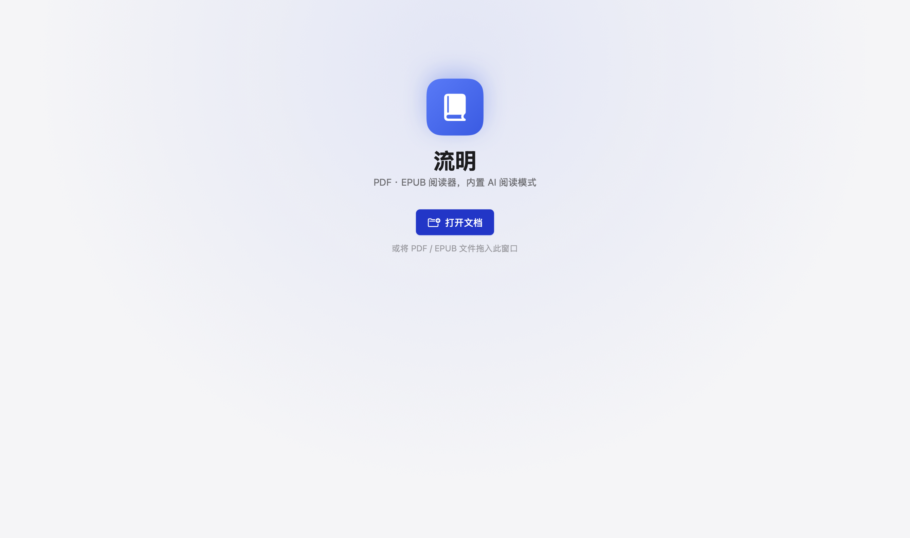
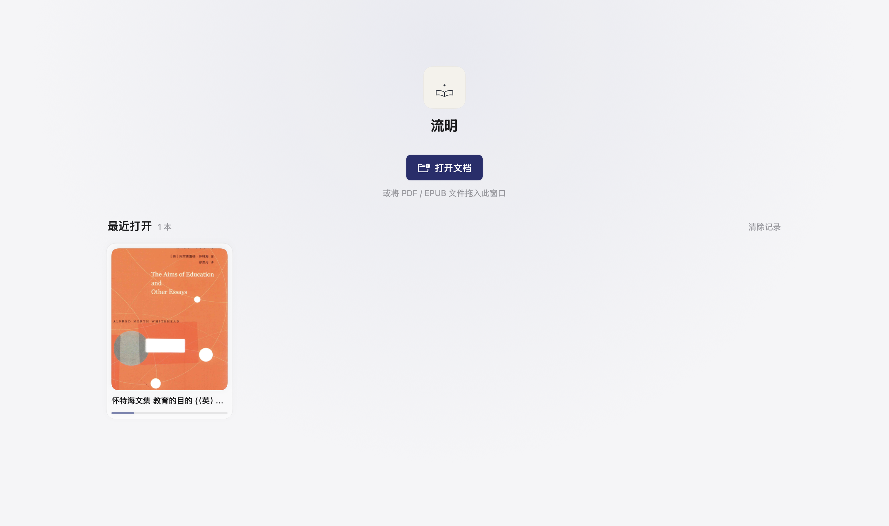
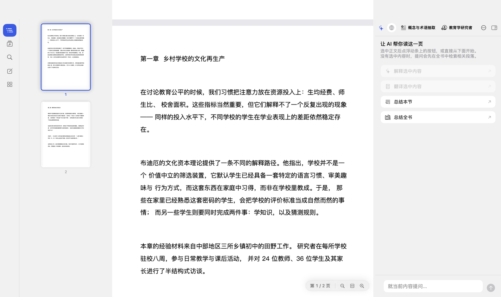
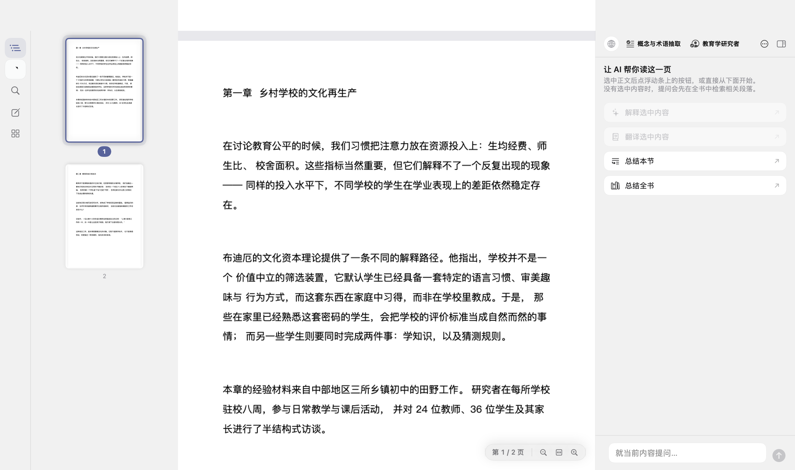

Lumen 视觉重构审查报告
01同类产品调研：沉浸感从哪来
先回答核心问题——UPDF、PaperRss 这类产品做了什么，才让「读 PDF」变成「沉浸」。
UPDF（AI PDF 阅读器，Superace）
- 内容占比 ≈ 85%：除两侧与顶部精简工具栏外全部让给页面。沉浸感的第一来源不是「加了什么」，而是删掉了多少 chrome。
- 改 PDF 的显示效果本身：单页 / 单页连续 / 双页 / 双页连续四种版式，外加护眼、深色、彩色背景（薄荷绿、星空蓝）等多种页面底色——沉浸是「背景退后、内容向前」。
- AI 入口收在右上角一枚图标（Copilot），阅读时不常驻、不打断。
PaperRss（macOS 纸感 RSS 阅读器，开源）
- 口号即设计纲要：「Reading First, AI Second」「让阅读回归纯粹与沉浸」。
- 纸感三栏：衬线字体承担正文、稳定三栏导航、明暗主题；列表 / 杂志多视图流体切换。
- AI 的存在方式是「没有 sticky 的聊天机器人或 LUI」：按需摘要（按 V 键）、划词翻译 / 解释 / 提问、可整体关闭。AI 永远是被叫来的，不是站在旁边的。
旁证（FeatherReader 设计文档、iA Writer 等）
- FeatherReader：「Paper & Ink」——暖白纸底、暖近黑墨色、发丝级边框、安静的阴影；衬线是「内容的声音」，系统无衬线是「应用的声音」，后者永远让位。
- iA Writer：品牌即克制，单色、网格、留白本身就是识别度。
P1 内容占比优先——UI 的每一分视觉重量都是向阅读借的债；
P2 纸与墨的单色系——低饱和、细线、留白，彩色只留一枚强调色用于「指路」；
P3 AI 克制且同形——无 sticky 入口轰炸，全应用一个 AI 字形，按需出现；
P4 细节只为「恰到好处」——动效 < 300ms、ease-out、只动 transform/opacity、可中断。
02首页 → 画廊
旧首页的主角是软件自己（大图标 + 大标题 + 列表行）；新首页把主角交给内容：真实 PDF 封面墙，点一下回到上次读到的位置。


| Before | After | Why |
|---|---|---|
| 84pt 渐变自画图标 + 34pt 圆体大标题，hero 占首屏一半 | 64pt 纸底墨线小标 + 一行 22pt 标题 | P1：画廊首页的主角是封面墙，品牌区只需「知道这是谁」 |
| 最近打开 = 34pt 类型图标 + 文件名的列表行 | 自适应封面网格（172–232pt），异步渲染 PDF 第 1 页真封面 + 3pt 进度细线 | 封面是「一本书」的最快识别单元；进度线比百分比文字更快被扫到 |
| 「打开文档」与「继续阅读」两枚并排按钮 | 只留「打开文档」；最近卡片本身即续读入口 | 画廊化后「继续阅读」按钮是冗余入口，点卡片与点按钮等价 |
| EPUB / 未渲染占位 = 彩色类型图标 | 类型底色 + 文件首字（低饱和双色） | 占位也是封面系统的一部分，不引入第三种视觉语言 |
实现：Sources/LumenApp/Welcome/WelcomeView.swift 整体重写；CoverStore 串行队列渲染封面（与缩略图同一套「只为可见者渲染」纪律）；悬停 scale 1.02 + 阴影浮起，hover 动效 120ms ease-out。
03缩略图侧栏：滚动联动
按参考截图重做当前页指示：徽章 + 光晕。双向联动（点缩略图跳页 / 滚动 PDF 自动居中联动）原本就有，本轮解决「联动时好不好看、快滚时跟不跟手」。


| Before | After | Why |
|---|---|---|
当前页仅 strokeBorder 2pt + scaleEffect 1.015 | 描边 + accentSoft 外圈光晕（外扩 5pt）+ 页码实心徽章胶囊 | 2pt 线在整栏缩略图里扫视易漏；光晕把「选中」从线升格为面，徽章承载滚动联动时唯一要看的信息（对齐参考截图） |
联动滚动一律 withAnimation(quick) | 跳幅 ≤2 页带动画；>2 页（快滚 / 跳页）disablesAnimations 直接吸附 | 快滚 50 页 = 50 段互相打断的弹簧，侧栏看起来在「追」；大幅位移时吸附比动画更跟手 |
| 页码随选中变色 | 当前页白字实心胶囊，其余页裸数字 | 视觉重量全部让给当前页，一处强对比好过两处中等对比 |
实现：ThumbnailPane.swift；渲染管线（串行队列 + 可见性双检）未动——那部分本来就是对的呢。
04阅读界面整体：降饱和与减重
| Before | After | Why |
|---|---|---|
强调色 #2F5BEA（高饱和靛蓝） | #56639F / 深色 #8E9BD1（低饱和蓝紫灰） | P2：阅读器里 UI 的颜色是内容的竞争对手，强调色只需指路。选中胶囊、进度线、光晕、按钮全局生效 |
| LeftRail 选中 = 实心强调色块 + 白图标 + 0.9 描边 | accentSoft 淡胶囊 + 强调色图标，去掉描边 | 实心块在常驻图标栏里是持续存在的「高亮补丁」，阅读时一直拉扯注意力；Apple 侧栏惯例即淡胶囊 + 彩色图标 |
AI 入口三处三种 SF Symbol（sparkles / sparkles.rectangle.stack(.fill)） | 全部收敛为自绘环点字形（见 05），AI 面板头部改为不放图标 | P3：同形才有识别度；面板头部与 chips 并排的图标是「重复自我介绍」 |
05图标 v1 → v3：设计迭代与取舍
同一轮里图标经历了三个版本。每个版本的废弃 / 保留理由如下——最终语言：细线、极简几何、单色、留白，与 PaperRss 一脉的纸感 UI 同源。
迭代一（v1，已废弃）：实心渐变书页 + 光晕
v1 · 石板蓝渐变 + 实心书页
首版交付：Big Sur 底板、对角渐变、暖纸色实心书页与光点
- ✓ 成功处：「书 + 一点光」的意象准确，构图成立；书页 + 升光的剪影被保留至今。
- ✗ 问题：渐变与实心块是「重」的语言，与全局纸感 UI 相抵触；光晕的径向渐变在 Dock 小尺寸下变灰雾。
迭代二（v2，已废弃）：sparkle 双星 AI + 同语系微调
- AI 图标曾用低饱和双四芒星（参考截图里的通用 AI 星形）。
- ✗ 废弃理由：四芒星已是全行业 AI 万能符号（Cursor / Notion / Copilot），用它等于宣布没有自己的说法；且星形细腰在 14pt 工具栏尺寸下糊成一团。
- 这轮同时确立：主图标的问题不在「画得对不对」，而在「语言重不重」——由此触发 v3。
迭代三（v3，最终）：细线单色「灯下读书」+ 环点 AI
主图标 · 浅色（默认）
纸底 #F5F2EB · 墨线 #2F3540 · 16/1024 细线 · 无渐变无投影
主图标 · 深色
墨底 #262B33 · 纸线 #EAE4D6，同一线稿交换纸墨
紧凑版（≤64px）
线宽 ×2、光点 ×1.5、弧线拉直——16px 依然清晰
AI · 环点字形
细环 + 缺口处实心点；currentColor 单色，选中才染强调色
| 决策 | 取舍 |
|---|---|
| 主图标保留「书 + 一点光」意象，改为纯描边线稿 | 得到：与 UI 同语言、任意尺寸不糊、单色可打印；放弃：渐变的「精致感」与光影纵深——用留白补回来 |
| AI 图标 = 细环 + 缺口实心点（「轨道上的焦点」） | 语义：环 = 阅读回路，点 = 照亮。避开 sparkle / 机器人 / 大脑 / 灯泡全部俗套；取舍：信息量低——但工具栏 14pt 下「低信息量」恰恰是可读性 |
| 尺寸分级：≥128px 用母版，≤64px 用紧凑版 | 16/1024 的细线在 16px 下不足 1px；小尺寸加粗是 Apple 图标管线的常规做法。已生成完整 iconset + icns |
| AI 面板头部不放 AI 图标 | 评估过「保留 vs 移除」：工具栏 + 侧栏页签已两处同形指认，面板内第三处是重复。移除后更符合 PaperRss 式克制，故移除 |
| SVG 为唯一源文件（branding/*.svg）+ 无头 Chrome 光栅化（branding/render.js） | 改一处 SVG 即可全量重出 PNG / icns；深浅色 / 模板色 / 紧凑版全部由同一源派生 |
交付文件（assets/ 目录）：lumen-icon-light.svg / lumen-icon-dark.svg / lumen-icon-light-compact.svg / lumen-ai-template.svg（currentColor 单色模板）/ lumen-ai-template-compact.svg + 各尺寸 PNG。App 内字形（BrandGlyph / AIIcon）与 SVG 逐点对应，深浅色自动切换。
06顺手修掉的存量 Bug
| 位置 | 问题 | 修复 |
|---|---|---|
RecentDocuments.load() | 编码用 .iso8601 写日期，解码却用默认 JSONDecoder（按时间戳读 Double）→ 整体解码失败被 try? 吞掉，「最近打开」每次启动都静默清空（这也是旧首页从未显示过记录的根因） | 补 decoder.dateDecodingStrategy = .iso8601，与编码策略成对 |
07动效纪律自查
| 检查项 | 结论 |
|---|---|
| 动机 | 画廊入场浮起（低频落地页 ✓）、悬停浮起（低频 ✓）、缩略图选中切换（状态指示 ✓）、快滚吸附（避免动画互相打断 ✓） |
| 缓动 / 时长 | 全部沿用既有 DS.Motion 令牌（quick 0.22s spring / hover 0.12s / content 0.18s），无新增 easing；无 ease-in |
| 属性 | 只动 transform / opacity（scale、offset、shadow、opacity），未动宽高与边距 |
| 可中断 / 无障碍 | 用 transition / spring 而非 keyframes；动效门（MotionGate）与减弱动态全局开关继续生效 |
08改动文件清单
| 文件 | 改动 |
|---|---|
| Sources/LumenApp/Welcome/WelcomeView.swift | 重写为画廊首页（CoverStore 封面渲染 + GalleryCard + BrandGlyph v3） |
| Sources/LumenApp/Reader/PDF/ThumbnailPane.swift | 当前页光晕 + 页码徽章 + 联动滚动分档 |
| Sources/LumenApp/Reader/Sidebar/LeftRail.swift | Apple 式淡胶囊选中态 + AI 页签环点字形 |
| Sources/LumenApp/Design/DesignTokens.swift | 强调色降饱和（light #56639F / dark #8E9BD1） |
| Sources/LumenApp/Design/AIIcon.swift | 新建：OrbitRing + AIIcon v3（替换 sparkle 系列） |
| Sources/LumenApp/RootView.swift | 工具栏 AI 开关换环点字形 |
| Sources/LumenApp/AI/AIPanelView.swift | 面板头部移除 AI 图标 |
| Sources/LumenKit/Store/RecentDocuments.swift | 修复 iso8601 解码 bug |
| branding/（新增 5 个 SVG + render.js） | 图标唯一源 + 光栅化管线 |
| Resources/AppIcon.icns（新增） | 应用图标（build.sh 自动打包，Info.plist 已有声明无需改） |
验证方式：swift build 通过；用项目自带 --capture 自检通道对旧 / 新版本各截「欢迎页 + 阅读页（缩略图侧栏展开）」实况截图（即本报告 Before / After 图）；图标另出 1024 / 512 / 64 / 32 多尺寸核对小尺寸可读性。